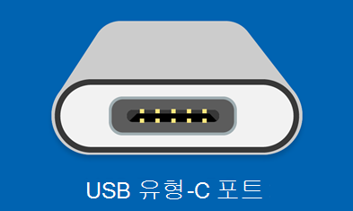

USB-C 인식 안 될 때, 마이크로소프트 공식 해결 순서
외장 SSD나 USB 허브를 USB-C 포트에 꽂았는데 PC가 반응이 없을 때가 있어요. USB-C 인식 안 될 때는 케이블 탓인지 포트 탓인지 감이 안 잡히는 경우가 많죠.
이번 글은 마이크로소프트 공식 지원 문서를 기준으로 정리했어요. 문서 제목은 'Windows에서 USB-C 문제 해결'이에요.
확인 대상은 외장 하드·SSD·허브·도크의 인식 문제예요. 전원 부족 경고나 USB4·Thunderbolt·디스플레이 연결 제한도 함께 다뤄요.
갤럭시 스마트폰을 USB로 연결할 때 인식이 안 되는 경우라면 원인이 달라요. 그 상황은 저희 블로그의 '갤럭시 PC USB 인식 안 될 때 확인 순서' 글에서 다루고 있어요.

마이크로소프트 지원 문서에 쓰인 USB Type-C 포트 아이콘이에요.
참고 · 마이크로소프트 지원 — Windows에서 USB-C 문제 해결
증상부터 확인해요
USB-C 문제는 증상마다 확인할 게 달라요. 지금 겪는 증상부터 먼저 짚어보는 게 순서예요.
아래 표는 마이크로소프트 공식 문서가 다루는 증상을 정리한 거예요. 해당하는 줄부터 읽고 아래 항목으로 넘어가면 돼요.
| 증상 | 확인할 것 |
|---|---|
| 장치가 아예 인식되지 않음 | 장치 관리자 오류 코드 |
| 충전이 느리거나 PC가 충전되지 않음 | 정품 충전기·케이블, 포트 청소 |
| USB4·Thunderbolt 기능 제한 안내 | 인증된 케이블, PC 직접 연결 |
| 외부 디스플레이 연결 제한 | 케이블·PC·디스플레이의 대체 모드 지원 여부 |
| 전원 부족 경고 | 외부 전원 공급 장치 연결 |
| 오디오 어댑터 인식 안 됨 | 디지털 오디오 어댑터로 교체 |
마이크로소프트 공식 문서(Windows 11 섹션)가 안내하는 6가지 증상과 확인 항목이에요.
기기가 아예 인식되지 않을 때
장치 관리자에서 오류 코드부터 확인하는 게 먼저예요.
마이크로소프트 공식 문서는 Windows 11 PC에서 오류 코드를 찾아 기록하라고 안내해요. 그다음 그 오류 코드에 맞는 장치 관리자 문제 해결 단계를 따르면 돼요.
다만 오류 코드가 28번이라면 이 절차가 아니라 별도 안내를 따라야 한다고 명시해요. 28번은 '디바이스용 드라이버가 설치되지 않음'을 뜻해요.
- 장치 관리자를 열어 문제가 있는 기기 옆의 오류 코드를 확인해요.
- 오류 코드를 기록해요.
- 오류 코드 28번이 아니라면, 해당 오류 코드에 맞는 장치 관리자 문제 해결 단계를 따라요.
| 오류 코드 | 조치 |
|---|---|
| 28번 | 이 절차 대신 별도 안내를 따라야 해요(드라이버가 설치되지 않음) |
| 그 외 코드 | 해당 오류 코드에 맞는 장치 관리자 문제 해결 단계를 따라요 |
장치 관리자에서 확인한 오류 코드에 따라 다음 조치가 달라져요.
케이블·포트 스펙부터 맞춰보세요
PC와 케이블, 연결 기기가 모두 같은 USB-C 기능을 지원하는지부터 확인해요.
외장 하드나 SSD, 허브를 연결했을 때 USB 디바이스 기능이 제한된다는 안내가 뜰 때가 있어요. 이럴 땐 마이크로소프트는 이렇게 확인하라고 해요.
- PC가 연결한 디바이스와 동일한 USB-C 기능을 지원하는지 확인해요.
- 케이블이 연결 기기와 같은 USB-C 기능을 지원하는지 확인해요.
- 장치나 동글을 허브를 거치지 않고 PC에 직접 연결했는지 확인해요.
다른 USB 포트로 바꿔 꽂아보는 것도 공식 문서가 안내하는 방법이에요. 이때도 장치나 동글이 PC에 직접 연결돼 있는지만 다시 확인하면 돼요.
충전이 느리거나 PC가 충전되지 않을 때
느린 충전과 충전 안 됨은 확인할 항목이 같아요.
마이크로소프트 공식 문서는 두 증상에 똑같은 해결 방법을 안내해요.
- PC에 포함된 충전기와 케이블을 사용해요.
- 충전기를 PC의 USB-C 충전 포트에 연결했는지 확인해요.
- 압축 공기 캔으로 PC의 USB-C 포트를 청소해요.
| 확인 항목 | 방법 |
|---|---|
| 충전기·케이블 | PC에 포함된 정품 제품 사용 |
| 연결 포트 | PC의 USB-C 충전 포트에 연결됐는지 확인 |
| 포트 상태 | 압축 공기 캔으로 청소 |
느린 충전과 충전 안 됨 모두 같은 세 가지를 확인하면 돼요.
USB4·Thunderbolt 기능이 제한된다는 안내가 뜰 때
PC와 케이블, 도크가 모두 해당 규격을 지원하는지부터 확인해요.
USB4 디바이스 기능이 제한된다는 안내가 뜨면 공식 문서는 이렇게 확인하라고 해요.
- PC가 USB4를 지원해서 연결된 장치·도크에서 최상의 환경을 얻는지 확인해요.
- 장치나 도크 제조업체가 제공하는 케이블, 또는 인증된 USB4 케이블을 사용해요.
- USB4 디바이스나 도킹을 PC에 직접 연결하거나, USB4 도크에만 연결해요.
Thunderbolt 디바이스 기능이 제한된다는 안내가 뜨면 확인할 건 하나예요. 그 디바이스가 Thunderbolt를 지원하는 USB-C 포트에 연결돼 있는지만 보면 돼요.
외부 디스플레이 연결이 끊기거나 제한될 때
PC와 모니터, 케이블이 모두 같은 대체 모드를 지원하는지 확인해요.
디스플레이 연결이 제한된다는 안내와 MHL 디바이스 기능이 제한된다는 안내는 확인 방법이 같아요. 공식 문서는 확인 대상을 PC와 외부 디스플레이, 케이블 셋으로 짚어요. 셋 모두 DisplayPort 또는 MHL 대체 모드를 지원하는지 확인하라고 안내해요.
| 안내 문구 | 확인 대상 |
|---|---|
| 디스플레이 연결 제한 | PC·외부 디스플레이·케이블 모두 DisplayPort 대체 모드 지원 여부 |
| MHL 디바이스 기능 제한 | PC·외부 디스플레이·케이블 모두 MHL 대체 모드 지원 여부 |
전원 부족 경고가 뜰 때
전원이 부족하다는 경고가 뜨면 배터리 대신 외부 전원을 써야 해요.
- USB 장치가 외부에서 전력을 공급받을 수 있다면, 외부 전원 공급 장치에 연결해요.
- PC를 외부 전원에 연결하고, 배터리 전원으로 쓰지 않아요.
오디오 어댑터가 인식되지 않을 때
USB-C 아날로그 오디오 어댑터라면 디지털 오디오 어댑터로 바꿔야 해요.
마이크로소프트 공식 문서는 USB-C 아날로그 오디오 어댑터가 PC에 연결돼 있는지부터 확인하라고 해요. 연결돼 있다면 어댑터를 뽑고 USB-C 디지털 오디오 어댑터로 바꾸라고 안내해요. 대부분 PC는 디지털 오디오 어댑터만 지원한다고 밝혀요.
| 어댑터 종류 | 결과 |
|---|---|
| USB-C 아날로그 오디오 어댑터 | 대부분 PC가 미지원 → 디지털 오디오 어댑터로 교체 필요 |
참고한 곳
· 마이크로소프트 지원 — Windows에서 USB-C 문제 해결
하루 정리
· 장치가 아예 인식 안 되면 오류 코드부터 확인하는 게 먼저예요.
· 충전·디스플레이·USB4 기능 제한은 대부분 케이블과 포트 스펙이 맞는지부터 봐요.
· 전원 부족 경고가 뜨면 배터리 대신 외부 전원에 연결해요.
· 갤럭시 스마트폰 연결 문제라면 이 글이 아니라 '갤럭시 PC 연결편' 글을 봐야 해요.